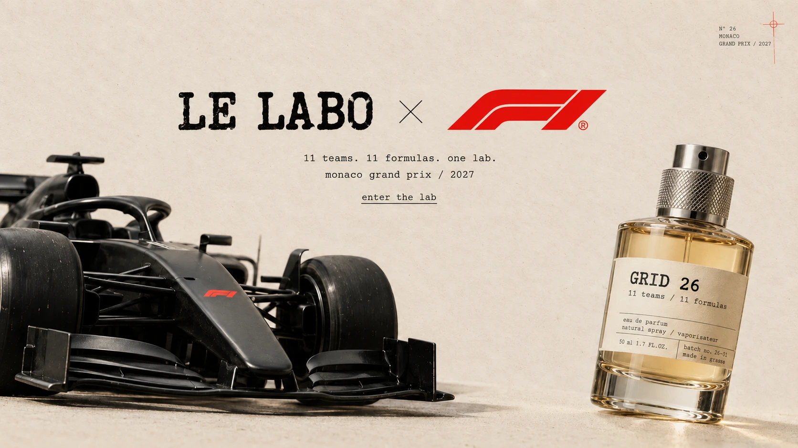
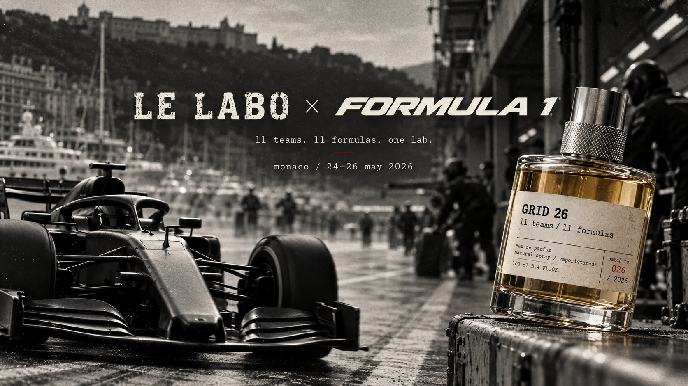

Le Labo × Formula 1
Grid 26 · Monaco 2027
11 teams. 11 formulas. One lab.
Individual speculative campaign · October 2026

01. The Brief — Campaign Dossier / 26
A speculative brand collaboration imagining how Le Labo could translate its personalized fragrance ritual into the precision, speed, and exclusivity of Formula 1. A meeting of precision and emotion, craft and performance, people and place—experienced through scent.
Role: Concept, Art Direction, Experience Design, AI-Assisted Visualization. Tools: Claude + ChatGPT.
Brand: Le Labo. Collaborator: Formula 1. Location: Monaco. Format: Pop-Up Experience. Date Created: October 2026. Individual Concept.
Speculative — Not Launched.
![01. The Brief — Campaign Dossier / 26. A speculative brand collaboration imagining how Le Labo could translate its personalized fragrance ritual into the precision, speed, and exclusivity of Formula 1. A meeting of precision and emotion, craft and performance, people and place—experienced through scent. Role: Concept, Art Direction, Experience Design, AI-Assisted Visualization. Tools: Claude + ChatGPT. Brand: Le Labo. Collaborator: Formula 1. Location: Monaco. Format: Pop-Up Experience. Date Created: October 2026. Individual Concept. Speculative — Not Launched.](../assets/images/campaigns/le-labo/phase-2-brief.png)
![03. The Formula System. 11 teams. 11 formulas. One lab. Each team becomes a scent code: 01 Team DNA, 02 Scent Formula, 03 Personalized Label. Monaco circuit map, 3.337 km, 19 turns, 43.7347°N 7.4206°E, elevation 0m, lap record 1:12.909. Performance, translated into scent. Product photography: a black Le Labo / Grid box (Grasse — New York) with a red leather spine; a Cuir 16 eau de parfum bottle labeled ferrari, monaco, diya, 24.05.26, 017/100, natural spray 15ml 0.5 fl.oz., one bottle, one point; a red Paddock access card for Le Labo / Grid, Monaco 24.05.26; a Monaco race program booklet; an open presentation box with a bottle registration card (scent: Cuir 16, city: monaco, date: 24.05.26, by: diya, no. 017/100), a numbered tag 017/100, and a black-and-white photo of a racing driver drinking from a bottle.](../assets/images/campaigns/le-labo/phase-3-formula-system.png)
04. The Monaco Activation
Proposed Monaco race-weekend pop-up activation on the harborfront, guiding visitors through three stations: 01 Compound — raw ingredients, precision blends, higher performance; 02 Personalize — your name, your scent, your race weekend; 03 Count — 11 teams, one fragrance community, tracked on a live Grand Prix Fragrance Leaderboard. Speculative concept, not launched.
![Proposed Le Labo × Formula 1 Monaco pop-up activation on the harborfront during race weekend, with yachts and the hillside city in the background. Three modular white stations: 01 Compound (raw ingredients, precision blends, higher performance), with a chemist in a lab coat mixing ingredients from amber bottles at a steel cart; a center station reading Le Labo × F1 above 02 Personalize (your name, your scent, your race weekend), with a staff member typing a label on a vintage typewriter for two visitors; and 03 Count (11 teams, one fragrance community), with a chemist working beside a chalkboard Grand Prix Fragrance Leaderboard tallying votes for Ferrari, McLaren, Mercedes, Red Bull, Aston Martin, Alpine, Williams, Racing Bulls, Haas, Audi, and Cadillac. Visitors in race-weekend white attire browse the stations.](../assets/images/campaigns/le-labo/phase-4-monaco-popup.png)
05. Race-Weekend Objects
A campaign built to be held, worn, opened, photographed, and kept. Objects become the media. 01 Personalized Cuir 16. 02 Paddock Invitation. 03 Race-Weekend Journal. 04 Disposable Camera. 05 Bottle Registration.
![05. Race-Weekend Objects. A campaign built to be held, worn, opened, photographed, and kept. Left: a numbered list of five objects — 01 Personalized Cuir 16, 02 Paddock Invitation, 03 Race-Weekend Journal, 04 Disposable Camera, 05 Bottle Registration — with the line Objects become the media. Center: a fictional campaign mockup styled as an Instagram Story from a verified account, tagged Monaco, Monte-Carlo, captioned 'see u in monaco!', showing a bed-top flat lay of a Le Labo × F1 journal open to a Monaco circuit spread, a Polaroid-style photo of a man in Ferrari racing gear, a Cuir 16 eau de parfum bottle labeled Ferrari / Monaco Grand Prix / A higher drive, a black Ferrari-branded gift box, a Paddock Invitation card for the Formula 1 Grand Prix de Monaco, a handwritten note reading 'To the next chapter. Same roads. New perspectives. A scent for those who keep moving. With anticipation, Le Labo,' and a red-and-black disposable camera branded Ferrari × F1, with hashtags #lelabo #f1 #LELABOxF1 and the caption 'fictional campaign mockup'. Right: closer product shots of the personalized Cuir 16 bottle (labelled: Ferrari, on: Monaco Grand Prix, for: a higher drive), the Paddock Invitation card, and the Ferrari × F1 disposable camera, with the caption 'MONACO / RACE-WEEKEND SYSTEM'.](../assets/images/campaigns/le-labo/phase-5-race-weekend-objects.png)
Le Labo × Formula 1 — Closing
A speculative collaboration translating Formula 1's precision, speed, and team identities into a Le Labo fragrance system. Grid 26, 11 teams, 11 formulas, one lab. Monaco, 24–26 May 2026.
